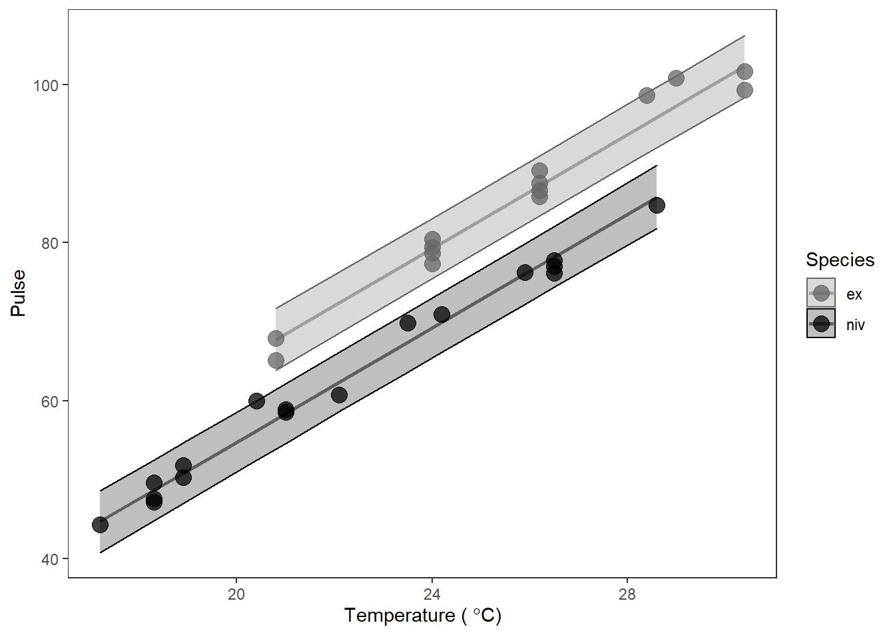

10.1 One-way ANOVA
When we are working in the world of one-way ANOVA, or even more complex models that contain only “main effects” of categorical, explanatory variables, the interpretation of these effects is relatively straightforward. Let’s use the PlantGrowth data as an example.
We’ll start here by fitting a one-way anova to test effects of treatment group on on plant weight.
## [1] "weight" "group"We’ve seen these data and this model before. We know there was a significant effect of treatment on plant weight but only trt1 and trt2 were different when we checked with the Tukey test. So, for now we will ignore the ANOVA table and just look at the summary.
##
## Call:
## lm(formula = weight ~ group, data = PlantGrowth)
##
## Residuals:
## Min 1Q Median 3Q Max
## -1.0710 -0.4180 -0.0060 0.2627 1.3690
##
## Coefficients:
## Estimate Std. Error t value Pr(>|t|)
## (Intercept) 5.0320 0.1971 25.527 <2e-16 ***
## grouptrt1 -0.3710 0.2788 -1.331 0.1944
## grouptrt2 0.4940 0.2788 1.772 0.0877 .
## ---
## Signif. codes:
## 0 '***' 0.001 '**' 0.01 '*' 0.05 '.' 0.1 ' ' 1
##
## Residual standard error: 0.6234 on 27 degrees of freedom
## Multiple R-squared: 0.2641, Adjusted R-squared: 0.2096
## F-statistic: 4.846 on 2 and 27 DF, p-value: 0.01591This summary gives us three coefficients corresponding to the coefficients of a linear model. Up until now, we’ve mostly ignored these for ANOVA and focused on hypothesis testing. But we need to use the coefficients to make predictions from our model and communicate biological results - which is why there is a history of people not doing this effectively.
If we wanted to write out that linear model, we could write it like this:
\(y = \beta_0 + \beta_1 X_1 + \beta_2 X_2\)
But this is confusing because we only gave R one variable for X! How did it get three? Plus, we’ve been thinking of ANOVA like t-tests. Much puzzlement.
10.1.1 Unifying the linear model
To really get full control over making predictions from linear models and the models to come we need to understand a little bit more about what R is doing here. I mentioned in Chapter 9.3 that we would need to start thinking about the linear model as \(y = \beta X + \epsilon\) or \(\sum_{k=1}^{K} \beta_k X_k + \epsilon\) to unify the t-test, ANOVA, linear regression, and ANCOVA into a single general framework. The reason for this is that R (and the math) actually don’t see X in our linear models the way we’ve been writing it in our code. The models we’ve talked about so far are solved through Least Squares estimation. This involves solving for however many \(\beta\) we might have using linear algebra and a little calculus to minimize the sum of \(\epsilon^2\), or our squared residuals. To do the math, X must be a matrix of values that can be multiplied by a vector coefficients (\(\beta\)) because as we now know, \(y = \beta X + \epsilon\).
So, how does this relate to \(\beta_0\) and the fact that we supposedly have three X variables in the PlantGrowth ANOVA even though it is just one column?
I’ve already told students in my class by this point in the semester, but I’ll repeat here that \(\beta_0\) has a special place in my heart. It is the thing that allows us to relate all of this crap back to \(y = mx + b\) and makes me feel like I understand statistics a little bit. But, it is also the hard part behind understanding the predictions you make from linear models if you don’t know or like (love) the algebra. Especially for ANVOA and ANCOVA-like models. And let’s face it, most of us as biologists don’t understand let alone love the algebra. We’ll try to keep avoiding that here as long as we can.
Up until now, we have thought of \(\beta_0\) as our (Intercept) term in linear models, and that is both truthful and useful. But, it is just another \(\beta\) in the matrix multiplication used to solve least-squares regression.
How, then, is the intercept represented mathematically in ANOVA?
10.1.2 The model matrix
In order to understand how the intercept works in ANOVA, we must look at the model matrix.
The model matrix or design matrix is X from the really gross equations that I started showing all of a sudden now that the Add/Drop period has ended. (Muahaha). It really isn’t as sinister as it sounds though.
For our plant model, we wrote weight ~ group in our call to lm() and didn’t have to think twice about what was happening after that. In the meantime, R had re-written the equation as \(y = \beta_i X_i\) or y = (Intercept)*model.matrix$(Intercept)+ grouptrt1*model.matix$grouptrt1 + grouptrt2*model.matix$grouptrt2. To begin understanding that difference, we obviously need to see this model.matrix object.
First, look at the actual data used to fit the model:
## weight group
## 1 4.17 ctrl
## 2 5.58 ctrl
## 3 5.18 ctrl
## 4 6.11 ctrl
## 5 4.50 ctrl
## 6 4.61 ctrlYou can see that we have one column for our response, weight, and one column for our explanatory variable, group, just as you thought.
Now here is the design matrix:
# Extract design matrix from fitted
# PlantGrowth model
X <- model.matrix(mod)
# Have a look
head(X)## (Intercept) grouptrt1 grouptrt2
## 1 1 0 0
## 2 1 0 0
## 3 1 0 0
## 4 1 0 0
## 5 1 0 0
## 6 1 0 0Okay, that’s actually not so bad. So, this is how R sees our data now. What R has done is to dummy code our group variable from the PlantGrowth data for each row of the data. The first column, (Intercept) contains only 1. You can think of this as X_0 in our linear model. It is multiplied by \(\beta_0\) in \(y = \beta_0 + \beta_k X_k\). But, since it is always 1 we just don’t write it when we write the formula for a line and \(\beta_0\) is always in the model! OMG that is sooooo annoying. The second column is an indicator variable for whether group is equal to trt1 for a given observation (row in PlantGrowth). If group == trt1 for that row, then the column grouptrt1 gets a 1. If not, it gets a 0. Same for grouptrt2. The columns grouptrt1 and grouptrt2 are each multiplied by their own \(\beta\) in our formula:
\(y = \beta_{(Intercept)} X_{(Intercept)} + \beta_{grouptrt1} X_{grouptrt1} + \beta_{grouptrt1} X_{grouptrt1}\)
If the columns grouptrt1 or grouptrt2 have 0, then \(\beta_i X_i = 0\) and the term for that group falls out of the equation, leaving only ctrl or the (Intercept). We can use this to make predictions directly from our model coefficients.
Before moving on to prediction, it is helpful if you think of the coefficients for ANOVA as being an intercept (mean of the alphabetically first group) and offsets, or adjustments, to that intercept for each subsequent group. That is, ANOVA is kind of like a linear model with multiple intercepts and no slopes. We are just estimating a bunch of points on the y-axis.
10.1.3 Prediction
Now that we’ve seen what R is actually doing, it becomes pretty trivial to make predictions from one-way ANOVA by hand.
We can get the model coefficients (\(\beta\)) like this:
## [1] "coefficients" "residuals" "effects"
## [4] "rank" "fitted.values" "assign"
## [7] "qr" "df.residual" "contrasts"
## [10] "xlevels" "call" "terms"
## [13] "model"coeffs <- data.frame(mod$coefficients)
# And now we have a vector of beta
betas <- coeffs$mod.coefficientsWe can use betas to make predictions from the formula of our linear model for each group by taking advantage of the dummy coding that R uses.
# From the model, we can estimate:
# Mean of control
y_control <- betas[1] + betas[2]*0 + betas[3]*0
# Mean of trt1
y_trt1 <- betas[1] + betas[2]*1 + betas[3]*0
# Mean of trt2
y_trt2 <- betas[1] + betas[2]*0 + betas[3]*1Or if you wanted to get really fancy, you could do this with matrix math:
# Get unique groups in dummy coded matrix
X_pred <- as.matrix(unique(model.matrix(mod)))
# Multiply betas by dummy coded
# matrix using transpose of both
# These are your predictions
# for ctrl, trt1, and trt2
y_pred <- t(betas) %*% t(X_pred)Of course, either of these approaches is super useful but R also has default predict() methods for most or all of the models we will work with in this book. We will use these for the most part, as will ggplot(), which is more convenient than you will ever be able to appreciate.
To make predictions of y from the original data that you used to fit the model (mod), you can just do this:
# Get unique values of groups and put it in
# a data frame. The predict function expects
# original x variable as a vector or a named
# column in a data.frame
groups <- data.frame(group = unique(PlantGrowth$group) )
# Make the prediction
y <- predict(mod, newdata = groups, interval = "confidence")
# Add it to the data frame
pred_plant <- data.frame(groups, y)If we want confidence intervals for the predictions, we can add that, too:
# Make the prediction with confidence
yCI <- predict(mod, newdata = groups, interval = "confidence")
# Add it to the data frame
pred_plantCI <- data.frame(groups, yCI)You could print this and get a nice clean table of estimated means and 95% confidence intervals for each group.
## group fit lwr upr
## 1 ctrl 5.032 4.627526 5.436474
## 2 trt1 4.661 4.256526 5.065474
## 3 trt2 5.526 5.121526 5.930474Now, let’s compare our model predictions to the actual means.
# Calculate group means
means <- PlantGrowth %>%
group_by(group) %>%
summarize(mean(weight))
print(means)## # A tibble: 3 x 2
## group `mean(weight)`
## <fct> <dbl>
## 1 ctrl 5.03
## 2 trt1 4.66
## 3 trt2 5.53Pretty much spot on!
10.1.4 Plotting
We could use any number of graphical tools to represent these results. Given that we’ve met the assumptions of normality, and we’ve determined that statistical differences exist, the simplest (and most common) method for visualizing these results is to just show a box plot or a violin plot, or both, with the raw data. Hmmm…I never realized how small this data set was.
ggplot(PlantGrowth, aes(x = group, y = weight)) +
geom_violin(aes(fill=group), alpha=0.2) +
geom_boxplot(aes(fill=group), width = 0.2, alpha = 0.5) +
geom_jitter(aes(color=group), width = 0.15, alpha=0.5) +
scale_fill_manual(values=c('black', 'gray30', 'gray60')) +
scale_color_manual(values=c('black', 'gray30', 'gray60')) +
xlab('Group') +
ylab('Weight (g)') +
theme_bw() +
theme(axis.title.x = element_text(vjust = -1),
axis.title.y = element_text(vjust = 3),
panel.grid = element_blank()
)This plot is really cool, but it doesn’t actually show us how our model predictions compare to the raw data!
However, we could also think of our model predictions as just being different y-intercepts, which will be helpful when we start to work with ANCOVA. If we plotted them that way, they would look like this:
ggplot(pred_plantCI, aes(x = 0, y = fit, color = group)) +
geom_point(size = 3) +
scale_x_continuous(limits = c(-1, 1), expand=c(0,0)) +
geom_segment(aes(x = 0, xend = 0, y = lwr, yend = upr),
lwd = 1.5, alpha = 0.25) +
xlab("X") +
ylab("Weight (g)") +
labs(color = "Predicted")But this is really hard to see and understand. So, we usually look at it like this in keeping with the dummy coding that is used in the model matrix:
ggplot(pred_plantCI, aes(x = 1:3, y = fit, color = group)) +
geom_point(size = 3) +
scale_x_continuous(limits = c(0, 4), expand=c(0, 0)) +
geom_segment(aes(x = 1:3, xend = 1:3, y = lwr, yend = upr),
lwd = 1.5, alpha = 0.25) +
xlab("X[, i]") +
ylab("Weight (g)") +
labs(color = "Predicted")
Or, perhaps more mercifully:
ggplot(pred_plantCI, aes(x = group, y = fit, color = group)) +
geom_point(size = 3) +
geom_segment(aes(x = group, xend = group, y = lwr, yend = upr),
lwd = 1.5, alpha = 0.25) +
xlab("Treatment group") +
ylab("Weight (g)") +
labs(color = "Predicted")
Finally, we could put this right over the top of our raw data and/or violin to see how well the model predictions match up with the data:
ggplot(PlantGrowth, aes(x = group, y = weight, color = group)) +
geom_violin(aes(fill = group), alpha = 0.05) +
geom_jitter(size = 1.5, width = 0.05) +
geom_point(mapping = aes(x = group, y = fit),
data = pred_plantCI,
size = 4) +
geom_segment(aes(x = group, xend = group, y = lwr, yend = upr),
data = pred_plantCI,
lwd = 1.5,
alpha = 0.5) +
theme_bw() +
theme(panel.grid = element_blank()) +
xlab("Treatment group") +
ylab("Weight (g)") +
labs(fill = "Group", color = "Group")